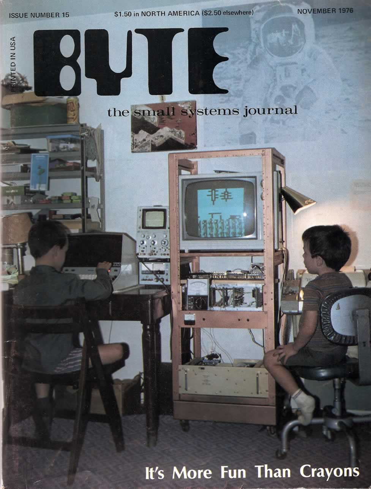
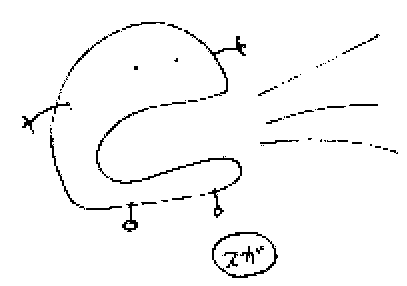

Imagine a computer harnessing the natural behavior of natural systems and utilizing their behaviors to solve equations.
A beauty cold and austere, like that of sculpture, without appeal to any part of our weaker nature, without the gorgeous trappings of painting or music, yet sublimely pure, and capable of a stern perfection such as only the greatest art can show.~
mechanical computers
- Candle Clocks: A candle set to burn a certain amount of hours, with nails pushed into it to fall at certain times when the flame would reach the height of each nail. They provided an effective way to tell time indoors, at night, or on a cloudy day.
Exploring what sort of computing can be done on paper.
Color Computer
Non-electronic computers that work when you color them according to a simple set of rules. The booklet contains three series of computers: computers that compare, computers that count, and computers that play. From a technical standpoint they are all NOR-based logic circuits designed by using truth tables, karnaugh maps, and maxterm expansions.
From a social, political, and environmental perspective, these computers are an exploration of computation without electricity and semiconductors, an attempt to reinvent digital systems away from efficiency and productivity, and a hopeful prototype to expose the inner workings of computers.~
Nomograms
A nomogram is a graphical calculating device, a two-dimensional diagram designed to allow the approximate graphical computation of a function. Each variable is marked along a scale, and a line drawn through known scale values (or a straightedge placed across them) will cross the value of the unknown variable on its scale.
Example: 3 x 4 = 12
Visual Multiplication
The stick method of multiplication involves properly placing and crossing sticks. You simply lay out sticks consistent with the place values of the digits being multiplied. Then, you count the places where the sticks cross.
Example: 62 x 21 = 1302
Lattice Multiplication
Lattice multiplication is a method of multiplication that uses a lattice to multiply two multi-digit numbers.
Example: 64 x 17 = 1088

Every one knew how laborious the usual method is of attaining to arts and sciences; whereas, by his contrivance, the most ignorant person, at a reasonable charge, and with a little bodily labour, might write books in philosophy, poetry, politics, laws, mathematics, and theology, without the least assistance from genius or study.
The Engine, Jonathan Swift
- Nomographie
- Deadreckonings
- Paper Phone
- Paper Camera
- Pen & Paper games
- Cardtalk Player
- Alligator Calculus
- Sadako
- Thread
--
A collection of notes on programming languages.
We use software because we have goals to achieve and things to do. The software we use is coded by programmers who have their own goals, sometimes these goals overlap with ours, over time these will diverge. The tools we depend on grow features we don't use or understand, introducing bugs that will prevent us from reaching our goals.

We have the choice of trying to understand the code and fix it, we have the choice of trying another program, and we have the choice of coding the software ourselves. All but the last path mean endless seeking, evaluating and further deviation from our goals.
code it yourself manifesto
- We implement it according to our own goals.
- We make mistakes and learn from them.
- We learn how the tools we depend on need to work.
- We gain a deep understanding of our problem domain.
- We still embrace sharing of ideas and code.

Software freedom is the freedom to run the program as you wish, for any purpose, to study how the program works, and change it, to redistribute copies and your modified versions so you can help others.
The concept that programming is something that you need special education to do is not right. It is something that is promoted by the priesthood.
Chuck Moore, Color Forth
Asking what is the most suitable programming language for permacomputing is a bit like asking what is the most suitable plant for permaculture – the entire question contradicts itself.
A virtual machine is a program that acts like a computer.
It simulates the instructions of a processor along with a few other hardware components, allowing it to perform arithmetic, read and write to memory, and interact with I/O devices, just like a physical computer. Most importantly, it can understand a machine language which you can use to program it.
To experiment with computing from first principles, have a look at the paper computer.

One way to simulate a two-dimensional cellular automaton is with an infinite sheet of graph paper along with a set of rules for the cells to follow.
The universe of John Horton Conway's Game Of Life is an infinite, two-dimensional orthogonal grid of cells, each of which is in one of two possible states, live or dead. Every cell interacts with its eight neighbours. At each step in time, the following transitions occur:
- Any live cell with fewer than two live neighbours dies, as if by underpopulation.
- Any live cell with two or three live neighbours lives on to the next generation.
- Any live cell with more than three live neighbours dies, as if by overpopulation.
- Any dead cell with exactly three live neighbours becomes a live cell, as if by reproduction.
In cellular automata, a methuselah is a small "seed" pattern of initial live cells that take a large number of generations in order to stabilize.
Fluidics is the construction of computing systems using fluids.
They employed water or air in plastic channels to implement logic gates; the gates were interconnected by standard, flexible plastic tubing. The advantage was their noise immunity, but their size and physical awkwardness was among their many negatives. A typical four-input AND or OR gate alone was about half the size of a deck of cards.

Paper Microfluidics
Paper microfluidics don’t require external pumps or power sources, they can be small, portable, disposable, easy to distribute and operate, low-cost, technically simple to make, and they only need tiny amounts of sample fluid. A minimal setup can be as simple as heating the lines drawn by wax crayon on extra absorbent paper, like cellulose paper and using droplets with food colouring.
Fractals are infinitely complex patterns that are self-similar across different scales.

mandelbrot.c
void
mandel(Uint32 *dst)
{
int width = 640, height = 480, max = 254;
int row, col;
for(row = 0; row < height; row++) {
for(col = 0; col < width; col++) {
double c_re = (col - width / 1.5) * 4.0 / width;
double c_im = (row - height / 2.0) * 4.0 / width;
double x = 0, y = 0;
Uint32 iteration = 0;
while(x * x + y * y <= 4 && iteration < max) {
double x_new = x * x - y * y + c_re;
y = 2 * x * y + c_im;
x = x_new;
iteration++;
}
putpixel(dst, col, row, (iteration % 2) * 0xFFFFFF);
}
}
}
Mandelbrot without fixed point
See the complete SDL2 source.
mandel(-2.0 * NORM_FACT, -1.2 * NORM_FACT, 0.7 * NORM_FACT, 1.2 * NORM_FACT);
typedef unsigned char Uint8;
typedef signed char Sint8;
typedef unsigned short Uint16;
typedef signed short Sint16;
#define NORM_BITS 8
#define NORM_FACT ((Sint16)1 << NORM_BITS)
Uint16 WIDTH = 600;
Uint16 HEIGHT = 400;
int
iterate(Uint16 real0, Uint16 imag0)
{
Uint8 i;
Sint16 realq, imagq, real = real0, imag = imag0;
for(i = 0; i < 255; i++) {
realq = (real * real) >> NORM_BITS;
imagq = (imag * imag) >> NORM_BITS;
if((realq + imagq) > (Sint16)4 * NORM_FACT)
break;
imag = ((real * imag) >> (NORM_BITS - 1)) + imag0;
real = realq - imagq + real0;
}
return i;
}
void
mandel(Sint16 realmin, Sint16 imagmin, Sint16 realmax, Sint16 imagmax)
{
Uint16 x, y,
deltareal = (realmax - realmin) / WIDTH,
deltaimag = (imagmax - imagmin) / HEIGHT,
real0 = realmin,
imag0;
for(x = 0; x < WIDTH; x++) {
imag0 = imagmax;
for(y = 0; y < HEIGHT; y++) {
putpixel(pixels, x, y, iterate(real0, imag0));
imag0 -= deltaimag;
}
real0 += deltareal;
}
}